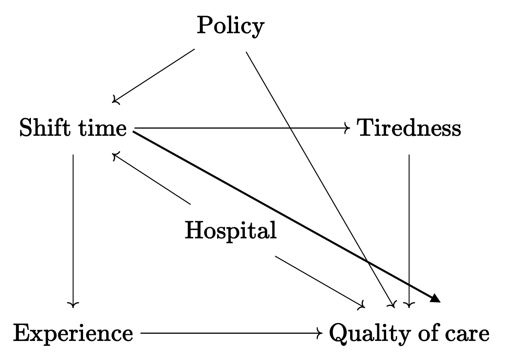

hod_simulation <- function(
N = 1e3,
rho = 0.5,
Bt = 1,
Bx = 1
) {
stopifnot(dplyr::between(rho, -1, 1))
stopifnot(N > 0)
Mu <- c(s = 1, x = 1)
sigmas <- c(s = 1, x = 1)
Rho <- rbind(c(1, rho), c(rho, 1))
Sigma <- diag(sigmas) %*% Rho %*% diag(sigmas)
d <- tibble::as_tibble(mvtnorm::rmvnorm(N, Mu, Sigma))
## approximately 50% of sample gets treatment with this hack
d$t <- rbinom(N, 1, pnorm(d$s, Mu[["s"]], sigmas[["s"]]))
e <- rnorm(N, 0, 5)
d$y0 <- d$x*Bx + e
d$y1 <- Bt + d$x*Bx + e
d$y <- ifelse(as.logical(d$t), d$y1, d$y0)
std_error <- sqrt(2*(5^2 + Bx^2) / (N/2))
pwr <- pnorm(std_error*qnorm(0.975), Bt, std_error, lower.tail = FALSE)
message("Standard Error ~ ", round(std_error, 3))
message("Power ~ ", round(pwr, 3))
out <- d[, c("x", "y0", "y1", "t", "y")]
structure(out, class = c("simulation", class(out)), pars = list(N = N, Bt = Bt, Bx = Bx, rho = rho))
}HW3
3.1
| Group (T) | E[Y^1] | E[Y^0] |
|---|---|---|
| T = 1 | 10000 | 5000 |
| T = 0 | 10000 | 5000 |
\[ ATE = \%T*ATT + \%U*ATU \\ \] \[ ATE = .3(5000) + .7(5000) \\ \] \[ ATE = 5000 \]
3.2
Estimand
OLS
Unit-specific quantity
Potential outcomes
Effect heterogeneity
DAG
Paths
Direct effects
Indirect effects
Total effects
Front door paths
Back door paths
Confounding
Collider
Open Path
Closed Path
3.3
Draw a causal diagram for the research question “do long shift hours make doctors give lower-quality care?” that incorporates the following features (and only the following features):
Long shift hours affect both how tired doctors are, and how much experience they have, both of which affect the quality of care
How long shifts are is often decided by the hospital the doctor works at. There are plenty of other things about a given hospital that also affect the quality of care, like its funding level, how crowded it is, and so on
New policies that reduce shift times may be implemented at the same time (with the timing determined by some unobservable change in policy preferences) as other policies that also attempt to improve the quality of care

3.4
Consider this research question: Does the funding level of public schools affect student achievement for students in your country?
What is the treatment and what is the outcome of interest?
The treatment is the funding level, the outcome of interest is the student achievement
Write down a list of relevant variables.
School funding, Student achievement, Regional wealth
Which of the variables in your list in part b are causes of both treatment and outcome?
Regional wealth
Why might we want to pay extra attention to the variables listed in part c?
It is a confounder, it could explain the whole (apparent) relationship between funding level and student achievement, so we have to be sure to control for it.
Draw a causal diagram of the variables listed in part b.

Simplify the diagram from part e.
3.5
How can a causal diagram be modified so as to avoid cyclic relationships?
Consider a cyclical relationship between student achievement and motivation. If students achieve more (i.e., score well on exams), then their motivation goes up, and if their motivation goes up, they achieve more. Change the diagram so that the relationship is not cyclic anymore.
3.6
Assuming that a path has no colliders on it, what is the difference between a path being Open and Closed?
For a path with no colliders, the path is open if all variables in the path can vary, and it is closed if any variable in the path cannot vary.
3.7
List every path from X to Y.
XAY, XCDY, XCDBY, XBY
Which of the paths are front-door paths?
XAY
Which of the paths are open back-door paths?
XCDY, XCDBY, XBY
What variables must be controlled for in order to identify the effect of X on Y? (only list what must be controlled for, not anything that additionally could be controlled for).
“If we can control for at least one variable on each of our Bad Paths without controlling for anything on one of our Good Paths, we have identified the answer to our research question”
Control for D and B.
3.8
Which of the following describes a causal path where all the arrows point away from the treatment?
Open Path
Closed Path
Front Door Path
Back Door Path
3.9
What type of variable is Popularity in one path on this diagram?
It is a collider variable in the path TQ -> Popularity <- NOP
Discuss what would happen if you controlled for Popularity.
We would open the currently closed path between Teaching Quality and Number of Publications, making it possible to explore the relationship between those two other variables.
3.10
 |
3.11
library(tidyverse)── Attaching core tidyverse packages ──────────────────────── tidyverse 2.0.0 ──
✔ dplyr 1.1.3 ✔ readr 2.1.4
✔ forcats 1.0.0 ✔ stringr 1.5.0
✔ ggplot2 3.4.3 ✔ tibble 3.2.1
✔ lubridate 1.9.2 ✔ tidyr 1.3.0
✔ purrr 1.0.2
── Conflicts ────────────────────────────────────────── tidyverse_conflicts() ──
✖ dplyr::filter() masks stats::filter()
✖ dplyr::lag() masks stats::lag()
ℹ Use the conflicted package (<http://conflicted.r-lib.org/>) to force all conflicts to become errorsset.seed(12345) ## include this so that grading is easier for me.
d <- hod_simulation(N = 1e3, Bt = 2, Bx = 4, rho = 0.8)Standard Error ~ 0.405
Power ~ 0.999Without looking at the results just yet… do you think the naive estimate will be larger or smaller than the “real” estimate (ATE=2)?
I think the naive estimate will be larger than the “real” estimate.
Check your answer. What are the results given by the naive estimator?
d |> group_by(t) |> summarize(E_y1 = mean(y1), E_y0 = mean(y0))# A tibble: 2 × 3 t E_y1 E_y0 <int> <dbl> <dbl> 1 0 4.00 2.00 2 1 7.72 5.72((4.002211+7.720357)/2) - ((2.002211+5.720357)/2)[1] 2Holy smokes its exactly 2
Re-do this but set
rhoto -0.8 (so that S and X are now negatively correlated).d2 <- hod_simulation(N = 1e3, Bt = 2, Bx = 4, rho = -0.8)Standard Error ~ 0.405Power ~ 0.999d2 |> group_by(t) |> summarize(E_y1 = mean(y1), E_y0 = mean(y0))# A tibble: 2 × 3 t E_y1 E_y0 <int> <dbl> <dbl> 1 0 7.70 5.70 2 1 4.12 2.12((7.831472+4.034304)/2) - ((5.831472+2.034304)/2)[1] 2Wow!
3.12
Take the d from the previous question and modify it so that the treatment is now randomized
d_t_messed_up <- d
d_t_messed_up$t <- sample(d$t)
d_t_messed_up$y <- if_else(d_t_messed_up$t == 1, d_t_messed_up$y1, d_t_messed_up$y0)Without looking at the results just yet… do you think the naive estimate will be larger or smaller than the “real” estimate (ATE=2)?
I’m starting to think its going to be the same.
Check your answer. What are the results given by the naive estimator?
d_t_messed_up |> group_by(t) |> summarize(E_y1 = mean(y1), E_y0 = mean(y0))# A tibble: 2 × 3 t E_y1 E_y0 <int> <dbl> <dbl> 1 0 6.17 4.17 2 1 5.72 3.72((5.832070+6.031256)/2) - ((3.832070+4.031256)/2)[1] 2It’s still 2.
Use
lm()to predict the newly createdyfromt. What are the coefficient values?lm(y ~ t, d_t_messed_up)Call: lm(formula = y ~ t, data = d_t_messed_up) Coefficients: (Intercept) t 4.167 1.555Use
lm()to predict the newly createdyfromtandx. What are the coefficient values?lm(y ~ t + x, d_t_messed_up)Call: lm(formula = y ~ t + x, data = d_t_messed_up) Coefficients: (Intercept) t x -0.2922 2.0643 4.1787